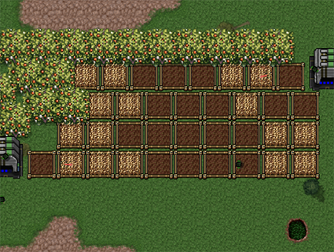

人类战争-模拟战争
简介

Rz的载具需要人类乘坐才可以被控制，在对战中不仅要对抗敌人， 还要和天灾与食物作斗争，稍有不慎就可能被自己送葬掉来之不易的胜利
饥饿的人类可能会到处破坏，
被雷劈中的东西和死掉了没什么两样，龙卷风会卷走你的劳动成果
陨石会砸烂地面，你会庆幸有石头的同时地表辐射也会感染传播你派过去回收的单位和人类，
请隔离他们
如果你玩的的是单人模式，
你会操作着你的单位去打不可能被战胜的人工智能(指ai不需要人类操控单位)
团队模式的情况下爱放地雷的人也会让你的陆军寸步难行
教程
初始开局
初始开局会分开几个步骤解释该如何不会被突如其来的危机让自己暴毙
两个农民建造粮仓和五六个小麦确保前期的食物运作，
可以建造些帐篷加快人类的生产，食物消耗数量和人数相关，指挥部内的人类不会消耗食物资源
制造避雷针可以避雷，具体可以到：雷雨
在外面放置一些单独的墙可以大概率阻挡龙卷风的侵略
食物系统

农民职业的人类可以在地面上种小麦或者果木，食物为0的情况下人类会罢工，具体请移动到
单位承载
在对村民没有动作的情况下可以自动回收附近的成熟作物或者浆果石头放进最近的粮仓，
粮仓离作物不能太远，那样会导致农民看不见附近的粮仓以至于一动不动，
在下雨的情况下作物会生长的更快，旱季时相反，指挥部的决策界面可以用化肥快速的催熟，
蟹笼产生的食物很缓慢，但是可以密集堆叠提高产量，捕鱼船会直接打捞产出，不需要经过粮仓来储存
火堆可以在冬天的时候保持作物不会死亡，具体可以转到天气天灾
人类分工
- 功能类
- 基础：最基础的人类，可以用于升级和建造基础的建筑
- 飞行：可以在陆地和暂时性非陆地的地块飞行，可以建造空军基地
- 游泳：可以在水面上游泳，暂时性的潜到水下，可以建造海军基地
- 智慧：建造更高阶的建筑，可以建造实验工厂和机甲工厂
- 农民：在食物系统中对农民有细致的解释
- 战斗类
- 步枪：可对空对地，可以冲锋加速，攻击速度中等，可以存六个地雷，地雷可以放置，每个地雷在步兵死亡时都会增加爆炸伤害
- 冲锋：攻击速度快，有弹夹限制，移动速度也很快，没有特殊的技能
- 火炮：攻击伤害高，范围较大，攻击速度缓慢，架炮后攻击速度和范围有显著提升
- 遁地：可以暂时性的遁入地下，近战攻击，伤害高，有的时候会偷懒
- 火焰：顾名思义，喷火的
单位乘载与效果
主线所有的单位和建筑都需要人类来乘坐来控制，有一些单位需要智慧的升级才可以乘坐，指一些实验单位建筑和建造用的单位
人类可以被坦克踩踏碾压，坦克的体积越大，碾压的伤害越疼，小麦野果和石子也会被如此的踩压掉，
人类就算在载具内也会消耗食物的，你的食物资源空掉之后人类会不受控制，主动脱离载具
飞机必须要降落的情况下才可以被人类乘坐和卸载，运载单位是无人的，如果你的食物资源空掉，人类会无视飞行中的载具而跳下来
- 麻痹：麻痹效果会组织单位移动和单位制造交互，除一些特殊单位可以不受交互影响其他基本无法出发交互动作
- 剧毒：对单位造成百分比伤害，积累毒素+被攻击血量百分比，此伤害破盾，无法被清除的负面效果
- 地表辐射：单位经过里面的人类会受到一级的感染，感染的人类死后会生成地表辐射，单位会变成中立
- 其他辐射：详情转到虫族支线与核支线
天气天灾与四季分化
- 下雨：会让坦克减速，重量越重陷得越深，让庄稼长得更快
- 干旱：庄稼生长更缓慢
- 雷阵雨：和下雨无异，在地图上无规则打雷，落下的雷会对附近单位建筑造成大量伤害和麻痹避雷针可以吸引闪电免受其他单位遭受伤害
- 大风天：对顺风单位加速，逆着风走的单位会有减速
- 大雾天：所有的单位视野降到统一为6，雾天结束会还原
- 春季：由冬转春的时候会在地图上生长野草，过段时间会生长成为野果
- 夏季：夏季会更容易干旱，除此之外和其他天气无异
- 秋季：正常的季节，但是下雨的概率会小一点
- 冬季：不在火堆里面的人类和庄稼会被冻死，在载具和建筑里面的人类不会受到影响，在一个地方放置多个火堆不会起到叠加作用，
- 龙卷风：龙卷风会带走沿途中所有的单位，可能会被建筑吸引，在海面上会卷起海鲜到岸边
- 陨石：砸落到地面上造成巨量伤害，附近会出现地表辐射，具体辐射详情单位承载与效果，回收陨石会获得石头ps：除了人类都能回收
虫族支线与核支线
虫族作为Rz的支线，拥有新的体系，分为腐虫和毒虫两种
腐虫有寿命限制，但是攻击力和速度会更高，死亡的时候会有毒气产生
毒虫的初始状态很弱，但是可以吃红蔓的果实慢慢变强，每个毒虫的效果增强方向都不同，没有升级的上限
对于虫族的单位太多，只讲一些复杂的单位
- 寄生虫：会和被寄生的单位血量对比，如果自身的血量比对面高就会寄生单位，如果少于对面单位血量会让对面掉寄生虫寄生时的血量
- 红蔓：生长的时候会有两个分支，群体回血和单体回血的红蔓，长到最后会产生红蔓的果实，毒虫回收后会有自身的增强
核支线作为Rz的支线，五叶制作，初始在决策中可选择的支线
复杂的资源生产方式，和原版差不多相同的操作，但是资源的获取和辐射的泄露都对这个体系有着重大的难度
五叶说自己去探索，没多的教程
关于
模组作者：
枫洛落-主线 虫族
五叶-核支线
冬临-单位
404-单位
麦穗-美工
斯图卡-特效
ling-技术支持
人战枫树洞：763671932